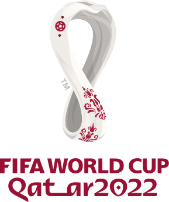

The FIFA Women's World Cup is an international association football competition contested by the senior women's national teams of the members of Fédération Internationale de Football Association, the sport's international governing body. Wikipedia Current champions: Spain (1st title) (2023) Founded: 1991; 32 years ago Most successful team(s): United States (4 titles) Number of teams: 32
